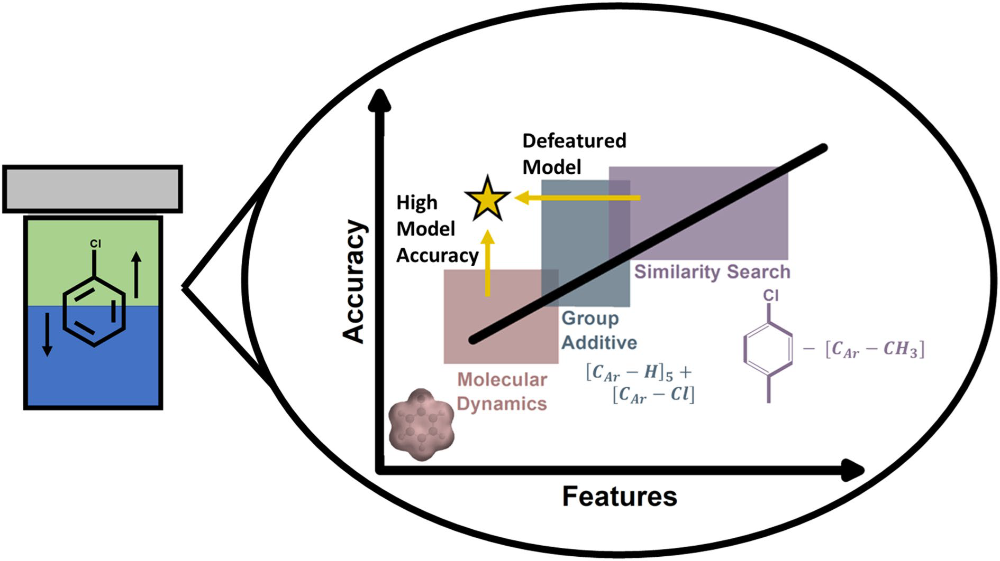
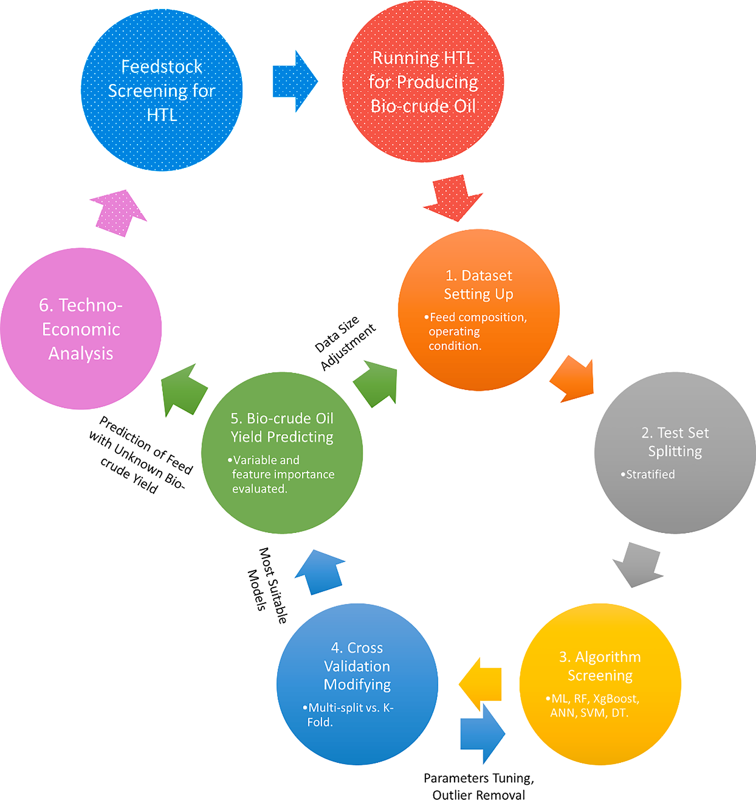
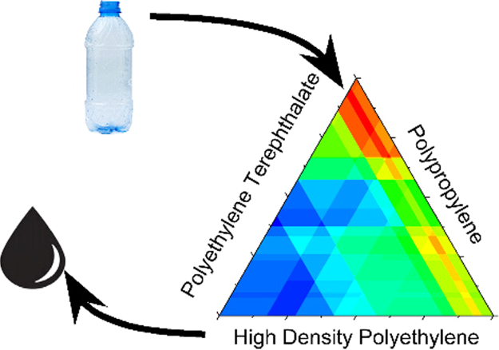

Dimensionally Reduced Machine Learning Model for Predicting Single Component Octanol-Water Partition Coefficients
Journal of Cheminformatics • 2023
Publications, datasets, and ongoing research at WPI Predict.
WPI Predict supports research in machine learning, computational chemistry, and molecular property prediction. This page serves as the central repository for publications, datasets, supplementary materials, and current research initiatives developed through the project.
Research publications and supporting documents will be available here as they are released.

Journal of Cheminformatics • 2023

Energy & Fuels • 2022

Energy & Fuels • 2023
This page will continue to expand as new prediction models, publications, datasets, and supplementary materials become available through the WPI Predict research project.